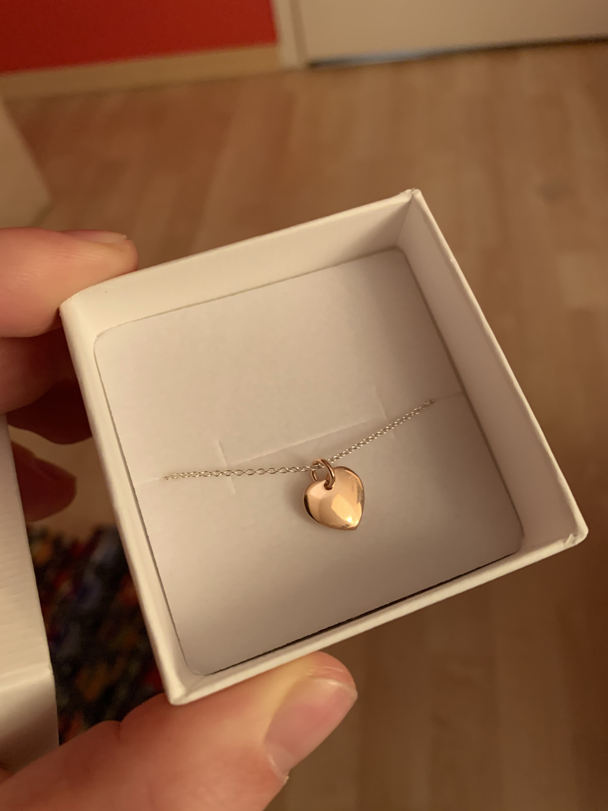

Sehr schön, du hast die doppelte Verpackung gemeistert. Ich war mit dem ersten Einpackversuch nicht so zufriden, hatte aber auch nicht mehr so viel Geschenkpapier, deshalb habe ich zur Sicherheit einfach eine Schicht dazu gemacht. Dann wäre es nicht so schlimm gewesen, wenn ich es beim zweiten Mal noch mehr verkackt hätte haha.
Ich hoffe dir gefällt das Armband. Ich stelle es mir auf jeden Fall sehr süß an deinem Handgelenk vor. Wenn du es behältst, kann du es dir in Münster kostenlos gravieren lassen. Das Geschäft ist da direkt bei der Lamberti-Kirche.
